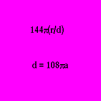
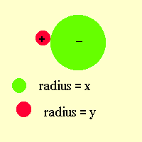

© Harold Aspden 1998
I believe that most cosmologists would say that the primordial form of matter that constitutes our universe has to be the two fundamental particles which, together, constitute the hydrogen atom, namely the proton and the electron. Accepting that and then taking note of what one has been taught about chemistry and atomic structure, there is then the question as to how atoms other than hydrogen are formed. We are guided by knowledge of the Periodic Table of Elements and the fact that the mean mass of the nucleons constituting those elements, as plotted against atomic mass number A, decreases to a minimum somewhere in the region of 52Cr, very close to where Fe is located. It then increases progressively to values beyond A=200 to where the range of stable atomic elements terminates and the Periodic Table ends after presenting a few short lived radioactive elements, the properties of many of which are only known from unnatural processes that we can generate in atomic reactors. Now the physics we are taught tells us that atomic nuclei at the lower end of that scale can fuse together to form heavier atoms and release energy because the atomic nuclei formed have a lower mean nucleon mass. They have positions closer to the minimum of that Periodic Table of Elements. Conversely, those heavier atoms in the upper sector of the scale can undergo fission to create atomic nuclei of lower mass per nucleon, also shedding energy as prescribed by that well-established physical formula E=Mc2.
That said, and that being a factual statement that can hardly be open to question, there is scope for a student to ask the rather obvious question: 'Why is it that all the matter we see around us in the universe has not already degenerated to the minimal nucleon energy form? In short, why are there elements, even the abundant isotopes such as hydrogen, carbon, oxygen, etc. still in existence and why is that all matter has not degenerated into the form of those metals that sit at the minimum of the curve which plots atomic mass per nucleon with the nucleon number A?
Well, of course, physicists do not ask such a question because they have no answer other than being able to say that facts are facts and that is not how it is. They might say that the universe is evolving and that it is still early days in the evolution cycle. If it all began with the creation of protons and electrons, giving us hydrogen as the main component of stars, then the passage of time will mean change as those heavier atoms form.
That is an answer I can understand, but then I ask myself why physicists are spending so much time trying to reinvent Creation by having their computers work out details of the so-called Big Bang, rather than using those computers to predict when we will see our Earth's atmosphere transmuted into stone, iron or whatever fate that Periodic Table of Elements might imply?
We would all like to understand something about how the universe was created, but I say that instead of guessing at various scenarios that might represent the way things were 10 or 20 thousand-billion years ago, why not ask why something that could have happened and be in evidence in our Earthly enivironment today is not, in fact, to be seen?
In short, there are questions that can be asked and which warrant research as worthy Ph.D. projects, but they are not even considered. The reason is that they do not build on a platform of existing theory with which our professors are familiar. It takes courage, inspiration and a rather special qualities for would-be research students to venture along an unknown path from an unknown starting point. Of course, there are those who will say: "Point me in the right direction and tell me what to look for."
Well I have no answer to that question other than to say that one must look for anomalies in physical phenomena or be introduced to such anomalies by one's teacher or professor. So I am daring here to introduce you, the reader, to what I see as an anomaly. I want to know why the universe has atoms in it other than hydrogen and how it is that hydrogen survives when, by the natural laws of physics and the scope for thermonuclear fusion, as in stars, it has not all been converted into some base metal form. I have my starting point and if you wish to accompany me on my research quest to find the answer to these questions I invite you to join me on the path of exploration.
Now no amount of argument based on this kind of assumption can have much impact on a would-be theoretical physicist already versed in the basics of Einstein's theory of relativity. Einstein's 'four-space' is regarded as the right route for those who seek to unravel the secrets of space. The notion of an aether is seen as 19th century folklore.
So I am relying on you, the reader, having at least glanced through the Tutorial Lessons which are to be found by pressing the following link:
If what is there presented has not already captured your interest, then you are unlikely to see any purpose in reading on in the Web pages which now follow.
If you are curious enough to proceed then I will move forward directly to tell you how I found a logical pathway to my belief in the aether.
I knew that energy could be stored in a vacuum. That came from my education in physics. When I came to do my Ph.D. research in electromagnetism and especially concerning electromagnetic induction in ferromagnetic conductive materials, I came to realise that the vacuum had a way, not only of storing energy, but also of sending it back to us. Now it is one thing to write down a formula for the amount of magnetic field energy stored in 1 cc. of space (say within a solenoid in a vacuum) and quite another to say that that formula explains how that energy returns by setting up an EMF driving the solenoidal current even though we have cut off the external power supply.
Oh yes, I knew the formulae for that as well, all empirical, of course, and all very useful in a practical technological sense, but all of that making no sense at all when one considered what we were doing in terms of the physical principles I had been taught. If I put energy into the vacuum, much as I can if I heat something and allow it to radiate energy into space, I would expect to lose that energy and not recover any. However, that is not the way things are. We can put energy into space by techniques of electromagnetism and get it back thanks to something discovered by Michael Faraday, but if we use the techniques of electromagnetism to set up electromagnetic waves, then the energy shed to the vacuum is lost.
So when I encountered something in my experimental research that was inexplicable, even by those empirical formulae that are part of standard teaching, I realised how little we who are 'expert' in electrical science know about the real truths of space and its role so far as energy is concerned. Now, if you do not understand something in the real world, especially in that world that sits at the leading edge of new technology, it is rather foolish to run away from it all and cocoon yourself in a make-belief world that supposedly avoids the issue. You cannot just declare that, because your point of view is important, the physical processes which govern the world around you all take you, meaning your physical being, as their electromagnetic frame of reference.
That is what Einstein did. He was concerned with the speed of light and a problem he felt he had to solve in his own way and to his own satisfaction. I, on the other hand, was concerned with the energy of space as stored by what we call 'inductance'. Einstein said that the speed of light in vacuo was constant relative to his viewpoint as observer and he invited you all to think the same in your own personal 'space'. I say that if there is energy stored somewhere in space it can affect the speed of light, just as energy embodied in the matter form of a block of glass can affect the speed of light, so I say that everything depends upon a proper understanding of energy.
Well, to cut a long story short, I found that I had some new ideas as to why iron was ferromagnetic, as a function of its crystal structure and the orbital component of its 3d-state electrons in its atoms. I say 'orbital' motion and deliberately ignore what physicists refer to as 'spin', because inherent in that 'spin' notion is a subtle cover-up which avoids the physicist recognizing the existence of the aether. You see, it all comes down to a factor of two. The ferromagnet reacts to a magnetic field reversal with only half of the impetus expected on the assumption (a) that the aether is not involved in the reaction and (b) that the ferromagnetic state is seated in orbital electron motion. So something had to be wrong. The physicist led by the nose by Einstein could not bring the aether into play and so the 'orbital' theory had to be wrong. The notion of 'spin' was invented to get that '2' out of the way - at least so far as this gyromagnetic property of bulk iron is concerned. However, that factor of '2' or '1/2', depending upon which way you introduce the angular momentum to magnetic moment ratio, is a vital issue having enormous significance where the aether is concerned.
My interpretation of that factor has indisputable merit! The magnetic effects of electrons in orbital motion is double the value we are taught by our physics lecturers, but the aether always reacts by setting up a reaction of half that primary value. Then when we turn the primary current off in that solenoid I mentioned, that aether reaction takes over as the primary reaction and feeds back to the solenoid the energy it has stored owing to its reaction.
Take away the aether and all you are left with is your mathematical equations. You will never progress beyond the point reached before Einstein came into the picture. You will never see how to extract energy from the aether, over and above the amount stored by you as inductance energy and you will be burying yourself under the pollution which your destiny indicates.
That is why you must come to terms with the need to believe that there is an aether in what we see as empty space and why I am here doing my best to introduce you to its features, based on my own decades of effort to decipher its detail from the data implicit in the dimensionless constants of physics. The full story of those past endeavours has been, or will be, told in these Web pages, but here in this discouse we are seeking to explain something we have taken for granted, such as our own existence. Why, indeed, did the aether create protons and electrons and not stop there, rather than allowing the onward creation of the forms of matter from which we are composed? Alternatively, and equally perplexing, why did the onward evolution of atomic matter not move on rapidly until everthing was turned to metal or stone?
By logical elimination of the various alternative models that one could conceive, I settled on a version that offers scope for analysis leading to a determination of the dimensionless physical constant that characterizes the aether, namely the one combining Planck's constant h, electron charge e and the speed of light c. That is known as the fine-structure constant.
The picture of the aether that emerged is shown in Figure 1 below:
Now, if you have read my Tutorial Notes, you will know that those negative charges (the quons) would be at a negative electric potential if they were all at rest and the 'secret' of my aether model is the realization that they have all been displaced in unison from the 'least-energy' state to one which excludes negative potential.
This was an interesting calculation exercise from which a value of r, representing half of that displacement distance, could be calculated in terms of the lattice separation distance d. It was found that r is 0.3029d and onward analysis resulted in the formulae I present in Fig. 2 below.

Now, of course, owing to the displacement of the charge lattice, the whole lattice system must have a kind of orbital jitter motion relative to that background sea of positive continuum charge shown in pink in Fig. 1. That arises from the balance of centrifugal force and the electrical restoring force due to the charge displacement. However, here we are more concerned with other aspects of this aether charge.
I found that I could progress to the discovery of those formulated expressions in Fig. 2 without needing to know anything else about the charge components of the aether. The model was simple. Its analysis was straightforward. It gave that wonderful result explaining the fine-structure constant and that meant that I knew how c, h and e all cooperated in that aether activity. I understood the nature of the photon and could calculate the energy stored by that charge motion in the aether. I also had the link I then exploited, namely the connection between the aether and the Bohr magneton, and the related quantization of the ferromagnetic state in terms of orbital electron motion. That was all part of this theory as it stood in the latter years of the 1950s.
Then one day, some ten or so years on from there, I decided to test the idea that there might be something that needed to be added to that aether picture in Fig. 1 to keep the wholly-degenerate quon charges from expanding. I did not want to think of a kind of gas asserting pressure on those charges which formed the lattice system, but I did explore how things would work out if that continuum shown in pink in Fig. 1 had its own energy with a energy density exactly equal to that of the quon charge. The result was fascinating.
I knew that my theory had shown that the radius of the quon charge was about 12.26 times that of the electron. If you track back to those Tutorial Notes you will find that number N of 1843 which is the calculated volume of the quon charge sphere in relation to that of the electron, the latter having that radius a. That had all emerged from the analysis involving that centrifugal balance against the restoring electric force. It linked the mass of the quon with its state of orbital motion and so with the Bohr magneton and the electron.
So, if you take that value of d in Fig. 2 above you can calculate the volume ratio of the aether lattice cell and that of the quon occupying that cell. The ratio is the cube of 108(pi) divided by 4(pi)a3/3 and further divided by that value of N=1843.
The result is 5059.49 and, since I knew that the electron had a mass that was the cube-root of N times that of the quon, I could translate this into electron-mass units to find the value given is 412.666. Like many physicists I had often wondered where the mu-meson fitted into the elementary particle scheme. It is often referred to as the 'heavy' electron and, as with the electron, it is created in a paired relationship with its anti-particle. The muon has a mass somewhat greater than 206 electron mass-units. Hence my cubic cell of aether had about the right amount of energy to create a mu-meson-pair. Here was a breakthrough!
Now it takes more than just a numerical coincidence to make a physical theory, so I had to proceed with caution. I felt, however, that here was a promising situation, if only I could see it lead to something that could serve to confirm that I was on the right track. The energy density of 'my aether' had suddenly shot up from the mass-energy associated with those quons in that lattice formation and risen by a factor of 5059 to account for a virtual muon pair in each cubic cell of space!
Then there arose the obvious question. Why would there be a pair of charges in each space cell, if they constituted a kind of gas? Why would the 'pressure' energy in a cell form into two charges having the values +e and -e of the standard electron charge unit?
So it was here that I speculated that there could be pair-transformation as between those virtual muons and the quon-continuum system, just as there can be transformations as between muons and electrons and positrons. This was the realm of quantum-electrodynamics. Let me here interject a quotation from p.685 of a standard textbook on physics by Brancazio, 'The Nature of Physics', published by MacMillan (1975):
One key feature of the quantum field theory is that photon exchange occurs so rapidly that it cannot possibly be observed; hence it is known as a virtual process.I introduce that quotation because there may be some who read this and wonder what 'virtual' means. It is not what some people these days call 'virtual reality', but 'reality' on a scale we cannot observe directly, because it is all happening in the microscopic activity of that underworld we should be referring to as the 'aether', if only physicists could get themselves into tune with the facts of physical science.


In Fig. 3 the two charges in the upper part of the cell are positive and negative virtual muons. In the lower part the quon, as the negative charge, is depicted, but the + sign indicates the continuum charge background of the cell as a whole.
In Fig. 4 the positions of the charges are reversed and it must be imagined that this occurs by transmutation of states. The transmutations need not occur so that the muons actually assume the positions previously occupied by the quon-continuum charge and vice versa. There has to be continuity of motion and position by the quon system, but, one way or another, those virtual muons contrive to get involved in a quantum-electrodynamic activity which makes all those charges of identical value e, whether positive or negative. Also, we must see in this the reason for there being a pair of virtual muons attributable to each cell in the aether.
Now we come to the major breakthrough! It involved an assumption. This was that the rhythm of the aether, the jitter at the Compton electron frequency, was the period of cyclic transmutation of those virtual muons as they jumped around in the aether background. I reasoned that they could not belong to the frame of reference set by the quon lattice, because that would upset my derivation of the fine-structure constant. So I presumed that those muons were a kind of gas that determined the inertial frame of reference, bearing in mind that the quon lattice has that orderly jitter motion relative to the inertial frame of reference.
Here I began to see the seeds from which a viable theory of gravity could develop. If the quon lattice really was the electromagnetic frame of reference then there could be something electrical in the aether system that could be unseen in electromagnetic terms as viewed from the electromagnetic frame of reference but yet set up electrodynamic interaction forces of attraction. It all looked a little complicated but the picture did develop very rapidly from that point onwards.
Now, looking at the effects of virtual muon creation and annihilation within an aether cell, based on Figs. 3 and 4, one must ask the question as to what happens if a muon is created inside a quon. The muon has a charge radius that is very much smaller than that of the quon or, indeed, the electron. This event would be a rather frequent happening and so that indicated that the action would merely expedite the transmutations we contemplated above with no particular consequence. It would be an ongoing scenario and the aether would remain active but in its general state of equilibrium without there being anything giving rise to the kind of physics we sense in our laboratories.
But then I asked myself whether it could be a chance possibility that a muon 'hit' would tend to have a lingering effect pending the quon restoring its form. In that eventuality, what if several muon 'hits' occurred in rapid succession, enough maybe to account for the creation of, say, an antiproton or a proton. Those bombarding muons come in two polarities and, with the right sequence of attack, one could imagine such a situation. All speculation, of course, but here there were formulae I could write to see how it all worked out.
The history of all this shows that I advanced in two steps, separated by another decade. I first discovered the basic proton algorithm, which I shall now describe

Suppose two virtual muons, each of radius z and each having energy determined by the Thomson formula, combine without mutual annihilations, to pool their energy. They could develop into two charge forms, depicted by the green and red spheres in Fig. 5, with one having a larger rasdius x than the other, of radius y. They keep their charges +e and -e, respectively.
The overall energy formula for the combination, allowing for their mutual electric potential, is:
From the above equation you can work out the value of y and so deduce the energy of that red charge shown in Fig. 5. You will come then to see that the energy of the two muons is virtually all driven into that red charge. However, we are trying to keep our minds on that picture of the aether and we should not be introducing electrons arbitrarily. So we will think again and say that the green charge is really a negative virtual muon of radius z. So we write x=z and then see what that tells us about that positive charge depicted in red.
Well, now solve that equation above to find y. You will see that the solution is that y is z/2, which means that the positive charge, if isolated, has twice the mass of the basic virtual muon. In other words we can bring two virtual muons together and, with energy conserved, they will form a paired partnership in which they sit side-by-side with one having greedily absorbed all of the energy supplied and the other sitting there knowing that, if only its electric charge has a place to go, it can vanish without its energy leaving any trace at all!
This is where we enter into the realm of the very unusual properties of quantified electric charges once we really begin to see what is hidden in the charge formula bequeathed to us by J.J. Thomson and others in the 19th century who saw what that formula meant. It was developed in order to explain the relationship between energy and mass, that is before Einstein got into the act and displaced the wisdom of history.
From such reasoning there came the picture of what I termed 'the dimuon'. It had that double amount of mass-energy of 412.666 electron units as possessed by the unit cell of aether.
The question I then asked myself was this. Suppose I run that argument I have just presented in a different way and say that, instead of that green charge vanishing completely, once the dimuon has been created, that charge reappears by actually absorbing more and more energy until it becomes itself a proton. This was speculation but a most exciting discovery was then made. Looking at the above formula I wondered how y as z/2 and x might adjust relative to one another if the complex could gain energy until the overall energy had a minimum value consistent with y representing the dimuon and x representing the proton.
Inverting this proposition, I wondering if it were the proton that was dominant and controlling as energy was shed until the proton happened to be paired by a dimuon. My reasoning was rather curious, seen in retrospect. I knew it was the muon that I could derive by my theory, not the proton, but I said: 'Suppose that Nature creates a whole spectrum of fundamental particles in charge pairs such as depicted in Fig. 5, that promptly decay, but that the ones which just happen to involve protons paired with dimuons are survivors and rather special. Would these be a minimal energy state, meaning that the right hand side of the above equation has a minimum value for y held constant at the proton value?'
This was conjecture, but now try your hand at differentiating that expression to see how x and y relate in value at the energy minimum. The answer is given by the equality:
In other words, if y is 412.666, then x is 1836.153. I remind you that the proton/electron mass ratio, as measured, is 1836.152701(37). So here I was confronted with something miraculous. The aether model I had developed had not only taken me into the realm of that mysterious heavy electron, the mu-meson or muon, as it is now called, but it had shed light on proton creation by giving the precise mass value of the proton!
My problem, however, one I struggled with for years, was whether I had got the 'cart before the horse', as it were. If muons, which I knew had a role in the aether, actually do create protons, then why is it that this energy minimization process makes it look as if the protons come first and the muon develops by energy being shed to assure that minimal state?
The aether exists as a natural state and could do so without creating matter of any form, were it not for that muon presence to keep the aether energy density uniform throughout. In serving that role the muons happen to penetrate the quons on very rare occasions but in numbers sufficient to trigger proton creation, all because of a curious mathematical freak situation implicit in the 'Basic Proton Equation'. The equation is really a dual equation and is quite remarkable.
My path of exploration, as I confront the challenge set by this project, is illuminated just a little by something I see as another freak circumstance.